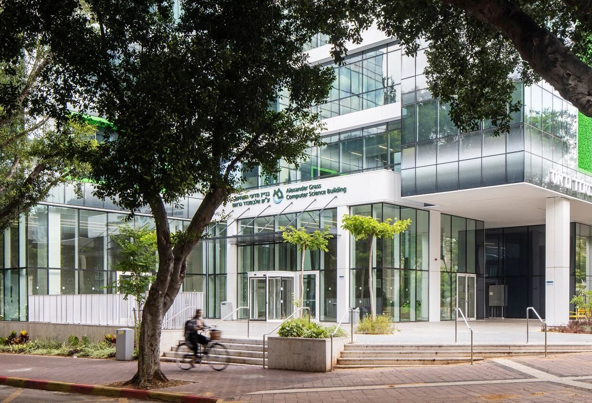
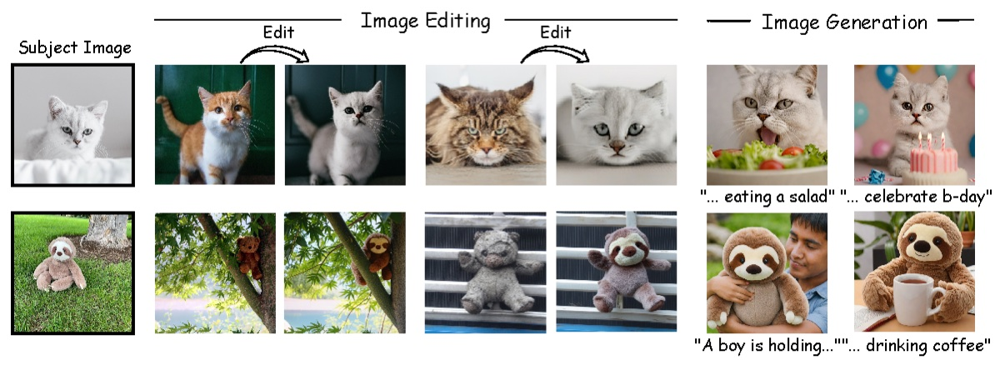
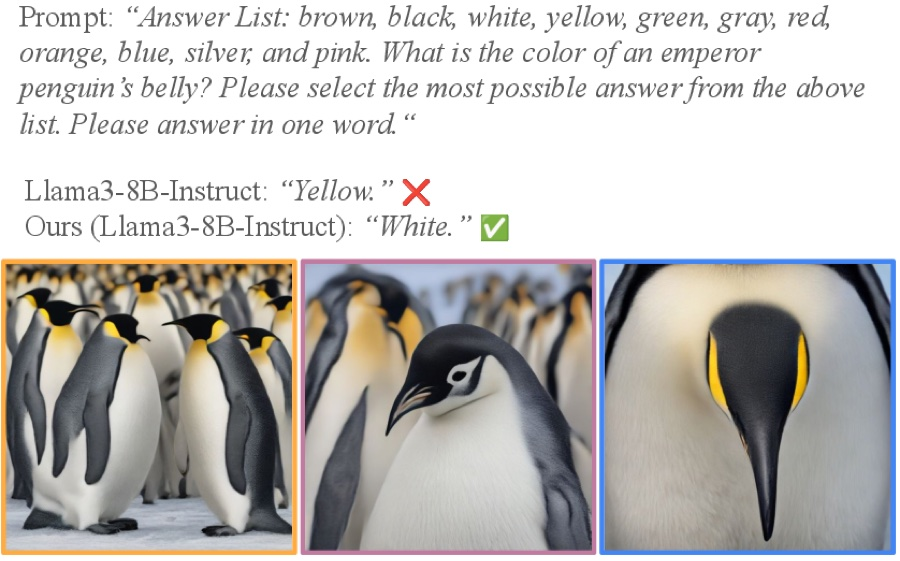
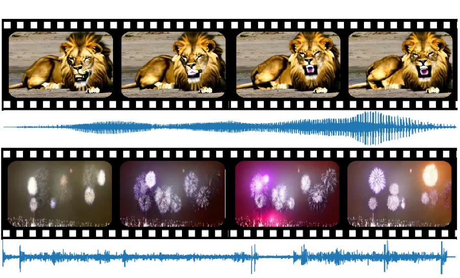
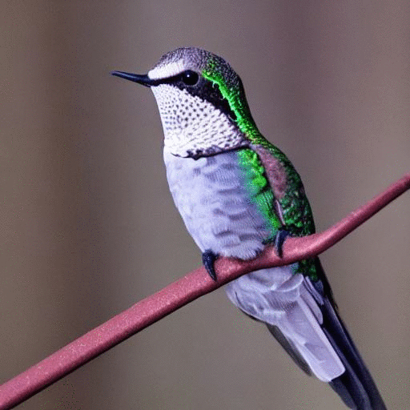
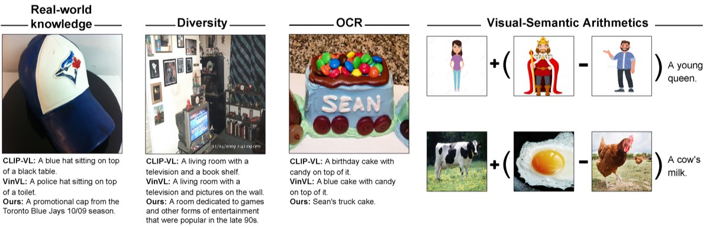
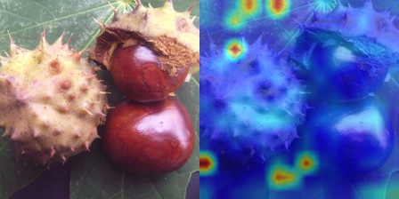
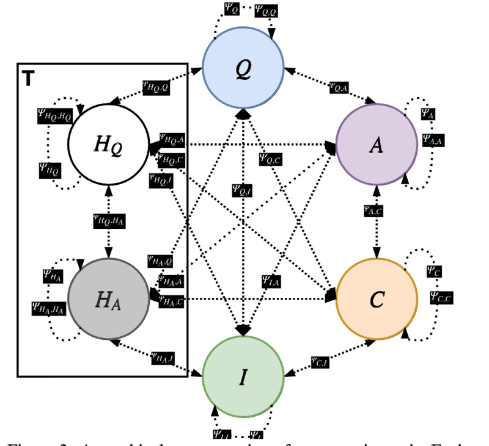
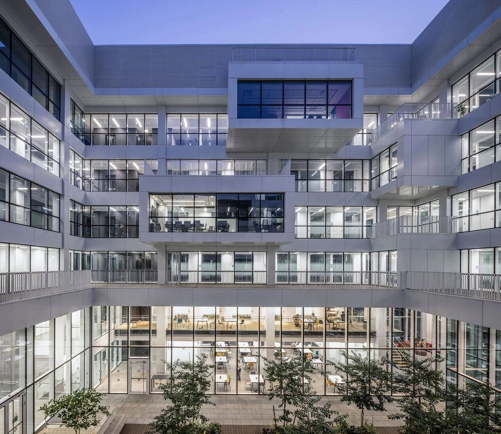

Bar-Ilan University · Computer Science and Artificial Intelligence
We study how machines perceive, reason, and act across modalities.
Led by Idan Schwartz.

We build models that connect vision, language, audio, and video, with a focus on generation. A recurring theme is attention: designing modules that fuse many modalities, and using the attention inside large generative models as a handle on what they produce. We are also drawn to questions from cognitive science, such as how perception, memory, and comprehension arise in machines, and increasingly to models that reason and act in the physical world.
Attention modules and pooling that fuse vision, language, audio, and video.
Guidance, search, and learned tokens that steer frozen generative models.
Generative and world models for agents acting in the physical world.
Perception, navigation, and action in interactive environments.
Models that answer, explain, and think over images and video.
Architectures that store and recall over long contexts and long videos.
Learning from interaction and feedback to align and control models.
S. Schiber, O. Lindenbaum, I. Schwartz
Steers cross-attention so concepts appear at the right moment in a generated video.
O. Zafar, Y. Cohen, L. Wolf, I. Schwartz
A reusable counting token, optimized with detector feedback, makes generated images match the requested count.

Y. Shpitzer, G. Chechik, I. Schwartz
Personalizes a diffusion model from a single subject image, iterating between generation and editing.

G. Yariv, I. Schwartz, Y. Adi, S. Benaim
Generates images from the prompt and fuses them with a frozen LLM at the last layer.

G. Yariv, I. Gat, S. Benaim, L. Wolf, I. Schwartz, Y. Adi
Maps audio into the input space of a frozen text-to-video model, keeping video aligned with sound.

I. Schwartz, V. Snæbjarnarson, S. Benaim, H. Chefer, R. Cotterell, L. Wolf, S. Belongie
Learns a single token from a classifier’s gradient to disambiguate fine-grained classes.

Y. Tewel, Y. Shalev, I. Schwartz, L. Wolf
A frozen LM plus CLIP captions images at inference time, and even does visual arithmetic.

H. Chefer, I. Schwartz, L. Wolf
Shaping relevance maps to focus on the foreground brings large robustness gains.

I. Schwartz, T. Hazan, A. G. Schwing
A general attention mechanism that fuses any number of utilities for visual dialog.
The complete list is on Google Scholar and Idan’s page.
Idan Schwartz · Principal Investigator
Department of Computer Science and Artificial Intelligence, Room 213
Building 503, Bar-Ilan University
Ramat Gan, Israel directions
